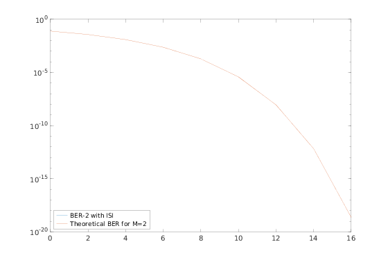
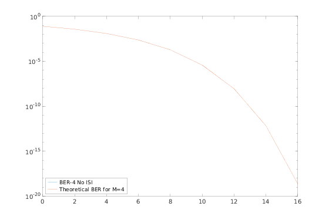
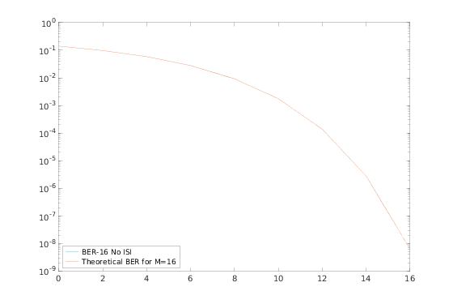
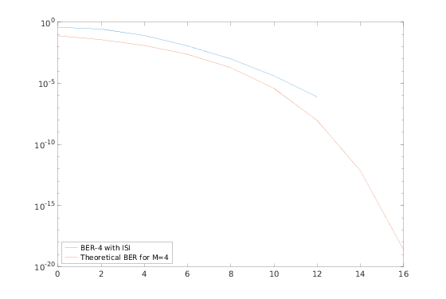

Contents
clear all;clc; close all
part a
numIter = 0;
nSym = 1000;
SNR_Vec = 0:2:16;
lenSNR = length(SNR_Vec);
m_ary = [2, 4, 16];
chan = [1, 0.2, 0.4];
tic;
trainlen = 300;
displayStr = ["BER-2 with ISI","BER-4 No ISI", "BER-16 No ISI"];
for it=1:length(m_ary)
M = m_ary(it);
berVec = zeros(numIter, lenSNR);
for ii = 1:numIter
msg = randi([0, M-1], nSym*(log2(M)), 1);
bits = de2bi(msg, 'left-msb').';
bits = bits(:);
for jj = 1:lenSNR
tx = qammod(msg,M);
if M == 2
if isequal(chan,1)
txChan = tx;
txNoisy = txChan;
else
txChan = filter(chan,1,tx);
txNoisy = awgn(txChan,SNR_Vec(jj));
eq1 = lineareq(6, lms(0.01));
txNoisy = equalize(eq1,txNoisy,tx(1:trainlen));
reset(eq1);
end
else
txNoisy = awgn(tx + (eps*1j), SNR_Vec(jj) + 10*log10(log2(M)),'measured');
end
rx = qamdemod(txNoisy,M);
rxTmp = de2bi(rx, 'left-msb').';
rxMSG = rxTmp(:);
[~, berVec(ii,jj)] = biterr(bits(trainlen+1:end), rxMSG(trainlen+1:end));
end
end
ber = mean(berVec,1);
figure(it);
semilogy(SNR_Vec, ber, 'DisplayName', displayStr(it))
hold on;
if M == 2
berTheory2 = berawgn(SNR_Vec,'psk', 2,'nondiff');
semilogy(SNR_Vec,berTheory2,'DisplayName', 'Theoretical BER for M=2')
legend('Location', 'southwest')
elseif M == 4
berTheory4 = berawgn(SNR_Vec,'qam', 4,'nondiff');
semilogy(SNR_Vec,berTheory4,'DisplayName', 'Theoretical BER for M=4')
legend('Location', 'southwest')
elseif M == 16
berTheory16 = berawgn(SNR_Vec,'qam', 16,'nondiff');
semilogy(SNR_Vec,berTheory16, 'DisplayName', 'Theoretical BER for M=16');
legend('Location', 'southwest')
end
end
fprintf('Part A: ');
toc
Part A: Elapsed time is 0.838201 seconds.
  
part b
clc;clear;close all
tic;
numIterations = 10000;
numSym = 1000;
n = 30;
numTraining = 30*n;
SNR_Vec = 0:2:16;
SNRlen = length(SNR_Vec);
chan = [1, 0.2, 0.4];
tic;
M = 4;
codeWordLen = 15;
msgLen = 7;
numWords = ceil(numSym*log2(M)/msgLen);
trainingBits = log2(M) * (numTraining/codeWordLen) * msgLen;
BERvec2 = zeros(numIterations, SNRlen);
enc = comm.BCHEncoder(codeWordLen, msgLen);
dec = comm.BCHDecoder(codeWordLen, msgLen);
for ii=1:numIterations
msg = randi([0, 1], msgLen*numWords, 1);
numBits = size(msg,1);
msg_enc = step(enc, msg);
a = msg_enc;
msg_enc = reshape(msg_enc,log2(M),length(msg_enc)/log2(M)).';
b = msg_enc;
msg_enc = bi2de(msg_enc);
parfor jj=1:SNRlen
tx = qammod(msg_enc, M, 'UnitAveragePower', true);
txChan = filter(chan,1,tx);
txNoisy = awgn(txChan,SNR_Vec(jj));
eq1 = dfe(12,6, lms(0.01));
eq1.SigConst = qammod(0:M-1, M, 'UnitAveragePower', true);
eq1.ResetBeforeFiltering = 0;
txNoisy = equalize(eq1,txNoisy,tx(1:numTraining));
reset(eq1);
rx = qamdemod(txNoisy, M, 'UnitAveragePower', true);
rxTmp = (de2bi(rx)).';
rxMsg = rxTmp(:);
dec_msg = step(dec, rxMsg);
[~, BERvec2(ii,jj)] = biterr(msg(trainingBits+1:end), dec_msg(trainingBits+1:end));
end
end
ber2 = mean(BERvec2,1);
ber2(find(ber2,1,'last'));
bit_rate = (numBits - trainingBits)/numBits
figure;
semilogy(SNR_Vec, ber2, 'DisplayName', "BER-4 with ISI")
hold on;
berTheory2 = berawgn(SNR_Vec,'qam', 4,'nondiff');
semilogy(SNR_Vec,berTheory2,'DisplayName', 'Theoretical BER for M=4')
legend('Location', 'southwest')
fprintf('Part B: ');
toc
Starting parallel pool (parpool) using the 'local' profile ...
Connected to the parallel pool (number of workers: 8).
bit_rate =
0.5804
Part B: Elapsed time is 3033.400583 seconds.
